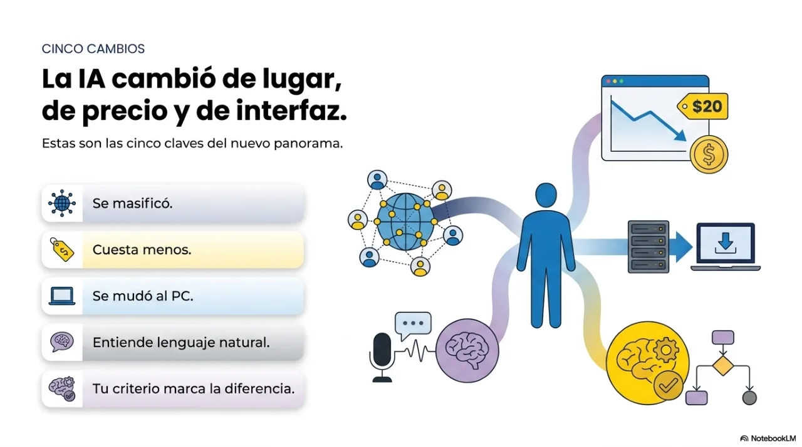
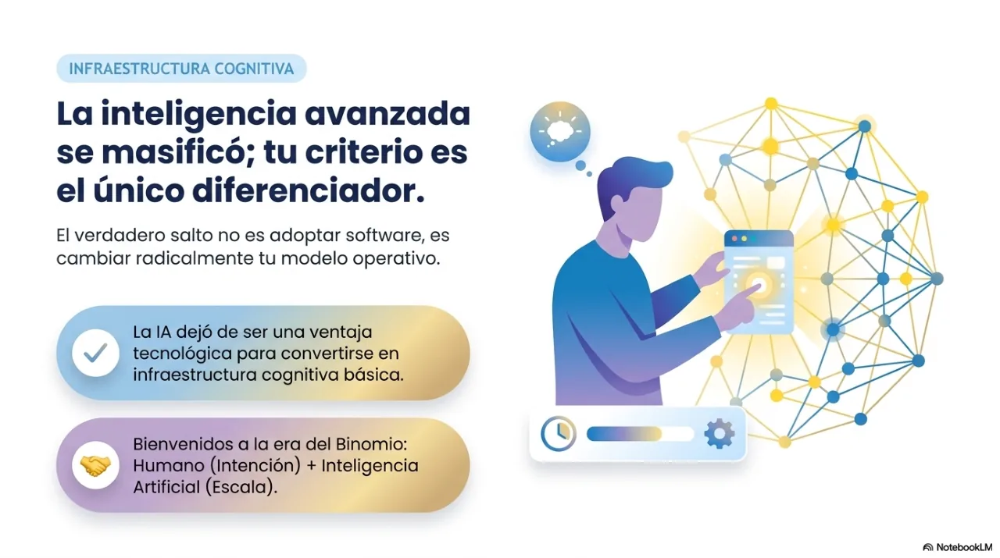
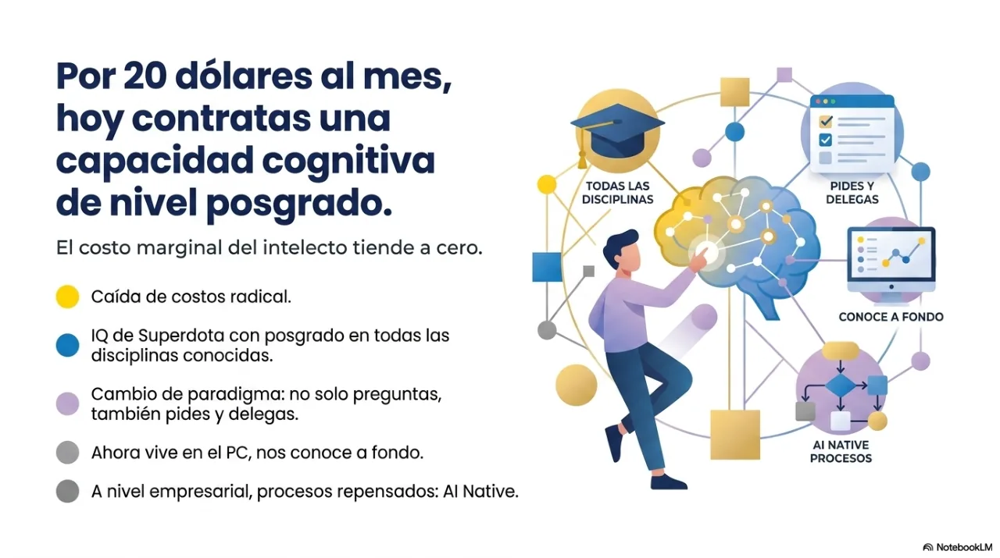
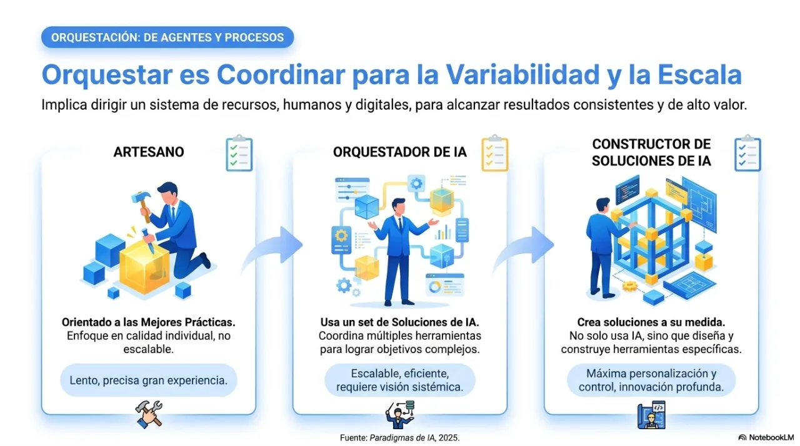
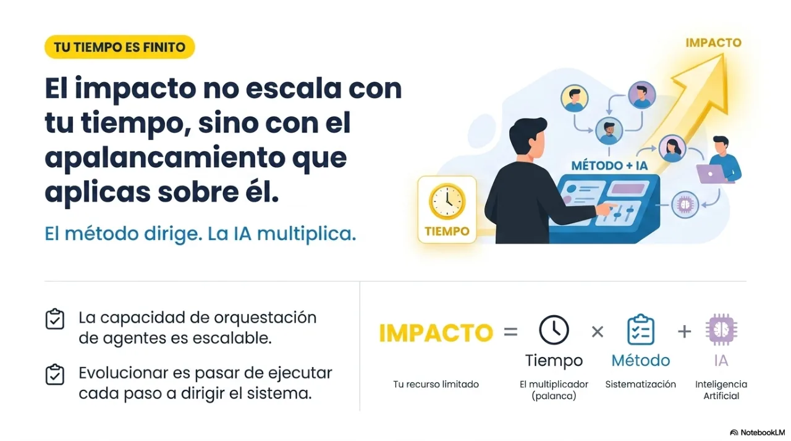
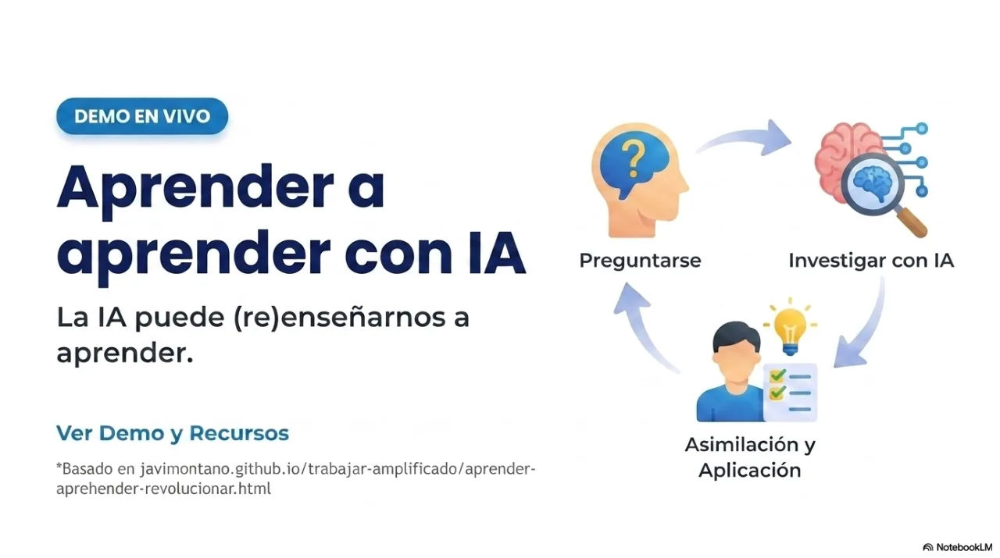
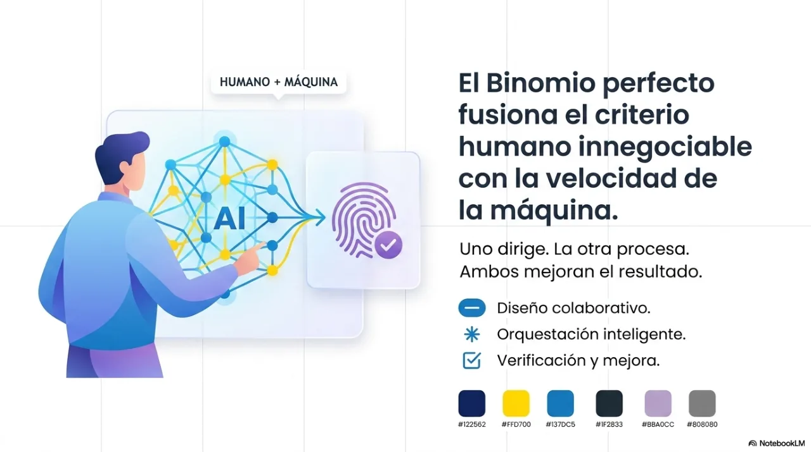
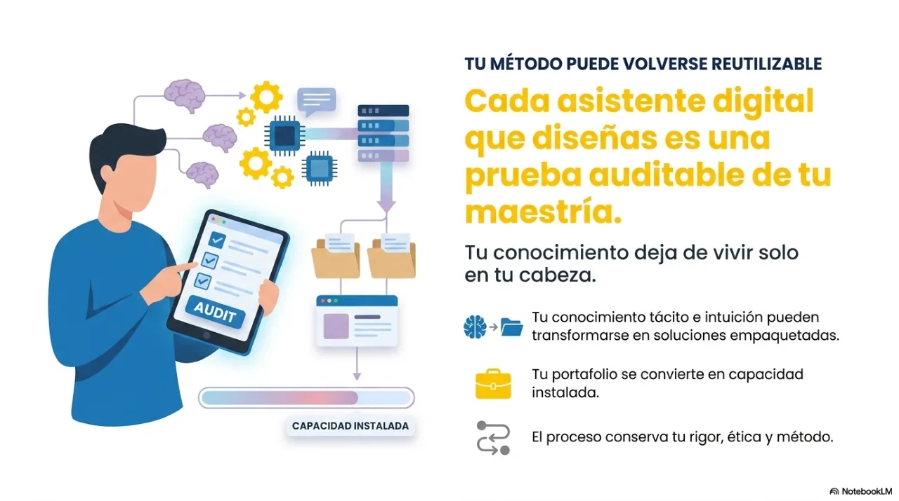
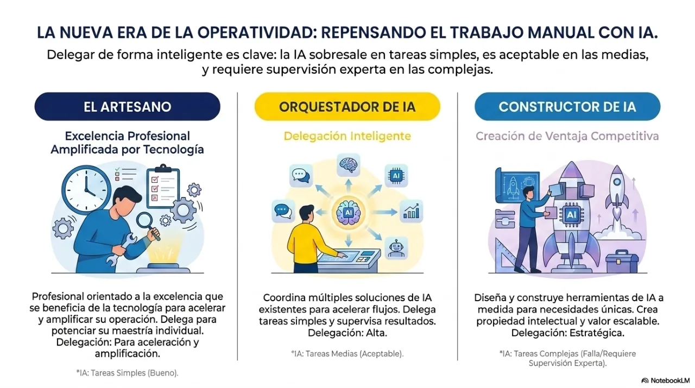

Masterclass oficial · PDF · 18
IA: qué está pasando y cómo sacarle provecho
Recorre la masterclass real en 18 láminas, salta entre páginas o descarga el PDF completo.
Facilitada porJavier Montaño · Fundador de MetodologIA
Usa ← → o abre el índice. Sin JavaScript, las 18 láminas aparecen en orden.
Ver las 18 láminas1 / 18
















